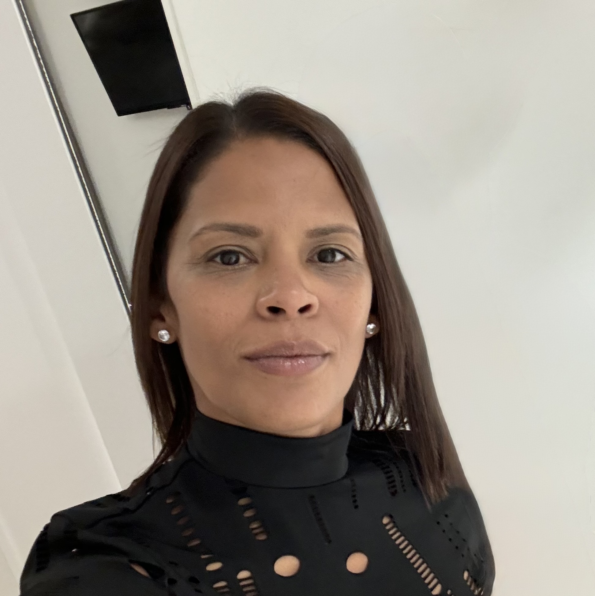

Summary
Dedicated professional with a versatile skill set and a passion for supporting individuals,
particularly vulnerable populations. Proven expertise in customer service, financial collections,
and providing guidance as a generalist adviser. Skilled in IT, administration, and problem-solving,
with a strong foundation in leadership and healthcare studies.
Adept at managing complex situations with empathy, patience, and effective communication.
Proficient in navigating and utilizing various company systems and software, quickly adapting
to new tools to ensure efficiency and accuracy in tasks.
Education
- Leadership Development
The Open University (2024 - Present)
- Certificate Of Higher Education in Healthcare with Health Science
The Open University (2018 - 2021)
- Certificate in Mathematics and English Level 2
(April 2018)
- Certificate in Web Development with HTML & CSS Level 1
(2013-2014)
- OCR Level 1 Award in IT User Skills (ECDL Level 1)
(2012 - 2013)
Work Experience
- Collections Advisor / SME Vulnerable Customers
Capita
(2022 - 2024)
- Handled early-stage collections, providing empathetic support to customers to
understand their financial needs and resolve account queries.
- Specialised as an SME for vulnerable customers, offering tailored solutions and
managing sensitive cases such as mental health challenges, domestic violence, and bereavement.
- Built trust through effective communication and follow-ups, ensuring solutions aligned
with company guidelines while preventing further financial distress.
- Conducted regular check-ins to maintain customer engagement and foster long-term support.
- Customer Service Advisor
Lloyds Banking Group
(2022 - 2022)
- Delivered exceptional customer service in a high-paced environment, resolving queries and complaints efficiently.
- Collaborated with cross-departmental teams to ensure seamless customer support.
- Maintained up-to-date knowledge of company policies and procedures to handle diverse customer needs effectively.
Voluntary Work
- Generalist Adviser
Citizens Advice Bureau
(2015 - 2016)
- Advised clients on a wide range of issues, including benefits, debt, housing, and employment.
- Conducted interviews, researched solutions, and liaised with external organizations to support clients effectively.
- Gained office management experience, including reception duties and handling enquiries.
Skills
- Customer Support: Skilled in managing sensitive cases and offering tailored solutions.
- Communication: Excellent verbal and written communication, active listening, and empathy.
- Technical Proficiency: Strong IT skills (Microsoft Office, HTML, CSS, CRM systems).
- Problem-Solving: Analytical and proactive in resolving complex issues.
- Leadership: Developing skills in guiding teams and supporting peers.
- Mental Health Awareness: Trained in Mental Health First Aid and peer support.
- Full Clean Driving License
Achievements
- Successfully raised over £400 for Marie Curie through various charity events,
including completing a 10k walk and a 5k Race for Life.
- Completed numerous self-study courses to enhance personal and professional growth.
Contact
Contact details
Hobbies
Hobbies